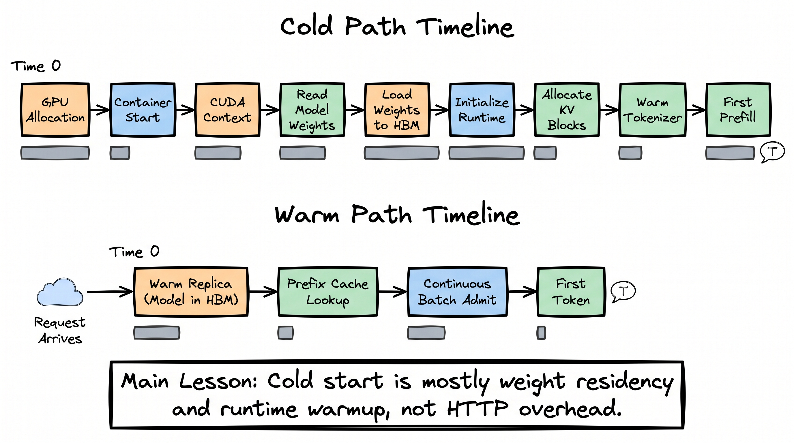
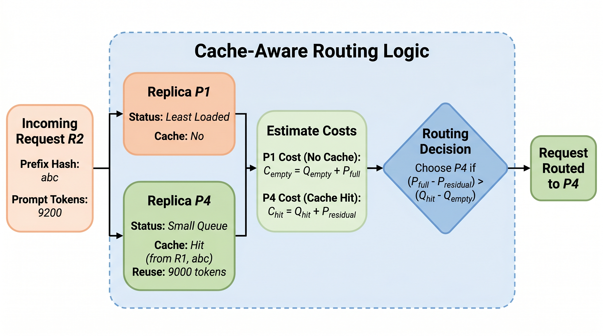

从快速 kernel 到真实服务。
一个生产级 LLM 系统不只是「模型服务器」。它是环绕模型服务器的一个控制面（control plane）：路由、预热容量、缓存局部性、部署门槛、护栏、可观测性与过载行为。本讲展示之前所有优化如何变成运维决策。
请求生命周期：每个阶段都有一个指标。
当用户说「模型很慢」时，他们把十个可能的瓶颈压缩成了一句话。生产推理系统会把延迟分解成阶段，然后给每个阶段一个「归属者」与一个「指标」。
| 阶段 | 指标 | 坏味道 | 典型修复 |
|---|---|---|---|
| 网关 | requests/sec、tokens/min、429 错误 | 免费租户导致付费租户 P99 尖峰 | 租户级限流与优先级队列 |
| 路由器 | 缓存命中率、回退率、模型混合 | 70B 流量无产品理由地上升 | 难度分类器或级联阈值调优 |
| 队列 | 队列深度、等待时间 | GPU 未饱和时队列却在增长 | 调度器配置、batch token 上限、错误的准入策略 |
| 预填充 | prefill 毫秒数、prompt tokens/sec | prompt 模板变更后 TTFT 跳升 | 前缀缓存、prompt 归一化、分块预填充 |
| 解码 | ITL/TPOT、输出 tokens/sec | 每隔几个 token 流式就卡一下 | decode 容量、更小 batch、分离式服务 |
| 输出 | schema 合法性、安全标志、修复率 | 文本合法但工具调用非法 | 引导解码、校验器、评测门槛 |
冷启动是「权重驻留」问题。
冷启动主要不是 HTTP 延迟。它是从「不存在有用的 GPU 进程」到「模型权重已驻留在 HBM、引擎可以接受请求」的整条路径。模型越大，冷路径越被「权重搬运、运行时设置与缓存分配」所主导。

PaperBanana 图示：冷启动 vs 热路径。热路径之所以存在，是因为模型权重与运行时状态已经驻留。
冷路径轨迹
t=0ms request arrives t=5ms router sees no warm capacity t=100ms cluster scheduler assigns GPU t=2s container ready t=8s model files opened / fetched t=18s weights copied into GPU HBM t=22s runtime initialized, CUDA graphs/kernels warmed t=23s KV block pool allocated t=24s first prefill can start
热路径轨迹
t=0ms request arrives t=2ms router chooses warm replica t=4ms prefix hash lookup t=8ms admitted into continuous batch t=30ms prefill begins t=250ms first token streams
如果一个预热的 70B 副本每小时花费 $X，但能在课堂演示、企业 agent 会话或语音通话中避免一次 20 秒的冷启动，那这个预热池就不是浪费，而是「延迟保险的保费」。
| 模型层级 | 冷启动敏感性 | 预热策略 |
|---|---|---|
| 小模型 7B/8B | 中等 | 保持一个小预热池；可以更快扩缩 |
| 70B 稠密 | 高 | 保持模型驻留；对交互流量避免 scale-to-zero |
| MoE/前沿模型 | 非常高 | 容量预留、滚动热切换、区域感知路由 |
按 token 与队列自动扩缩容，而不是 CPU。
对 LLM 服务来说，CPU 利用率往往是一个糟糕的信号。一个模型服务器可能 CPU 使用率很低，但 GPU 内存已满、decode 卡住、请求队列正在爆炸。
糟糕的自动扩缩容器
if cpu_utilization > 70%: add_replica() # actual incident: CPU = 24% GPU = 96% VRAM = 94% queue_depth = 380 P99_TTFT = 11.2s autoscaler does nothing
更好的自动扩缩容器
pressure = w1 * queue_time_p95 + w2 * active_tokens / token_capacity + w3 * vram_pressure + w4 * p99_ttft_slo_violation + w5 * decode_itl_slo_violation if pressure > threshold: add_warm_replica_or_shed_load()
缓存感知路由胜过盲目负载均衡。
传统负载均衡问的是「哪个服务器负载最低」。LLM 路由还要问「哪个服务器已经持有有用的 KV 状态」。如果两个请求共享一段长前缀，缓存局部性可能比一点点队列差异更重要。

PaperBanana 图示：路由器选择「队列惩罚小于省下的 prefill 工作」的那个副本。
具体的路由算术
Request R2: prompt = 9,200 tokens prefix_hash = abc reusable_prefix_on_P4 = 9,000 tokens Option A: least-loaded P1 queue_delay = 30 ms prefill = 9,200 tokens * 0.045 ms/token = 414 ms total_before_decode = 444 ms Option B: cache-hit P4 queue_delay = 120 ms residual_prefill = 200 tokens * 0.045 ms/token = 9 ms total_before_decode = 129 ms Decision: P4 wins by 315 ms, despite being busier.
| 信号 | 路由器如何使用 | 失败模式 |
|---|---|---|
| 前缀哈希 | 找到精确的 KV 复用 | prompt 开头的请求 ID 或时间戳会摧毁命中 |
| 语义缓存键 | 等价查询跳过推理 | 相似度阈值随意会导致错误复用 |
| prompt 长度 | 选择 prefill 密集的池 | 短但难的 prompt 仍可能需要强模型 |
| 期望输出长度 | 预留 decode 容量 | 生成前很难知道 |
| 租户层级 | 应用 SLO 与优先级 | 层级不等于任务难度 |
LLM 的金丝雀部署需要质量门槛。
Web 金丝雀盯的是错误率与延迟。LLM 金丝雀还必须盯「行为」：输出长度漂移、拒答漂移、schema 合法性、工具调用正确性、安全标志率、每请求成本与缓存命中率。
promotion_gate(candidate): require eval_score >= baseline - tolerance require json_validity >= baseline require tool_call_success >= baseline require p99_ttft <= baseline * 1.10 require p99_itl <= baseline * 1.10 require avg_output_tokens <= baseline * 1.15 require safety_flag_rate <= baseline + guard_band require cost_per_request <= baseline * 1.15 require rollback_plan == tested
护栏是一条流水线，而不是魔法分类器。
护栏存在于生成之前、之中与之后。正确的系统会：早期用廉价的确定性检查，只在必要时用更强的基于模型的检查，并在输出边界做结构化校验。
输入护栏
认证租户策略PII 扫描提示注入工具权限限流
if user asks for forbidden action: reject before GPU work if tool call exceeds tenant permission: block before model generation if prompt contains high-risk content: route to stricter policy/model
输出护栏
schema 解析业务规则安全分类器引用检查修复回退
parse output validate schema validate tool args check policy and PII return, repair, redact, or fallback
| 护栏 | 延迟成本 | 何时使用 |
|---|---|---|
| 正则 / 解析器 / 枚举检查 | 微秒到低毫秒 | 结构化输出始终使用 |
| 小分类器 | 个位数到几十毫秒 | 策略分诊、路由风险 |
| LLM 评判器 | 数百毫秒或更多 | 抽样审计或高风险决策 |
| 人工审阅 | 分钟到天 | 受监管或不可逆的工作流 |
批量与在线推理不应争夺同一个 SLO。
在线流量关心首 token 延迟与平滑流式。批量流量关心吞吐与成本。在没有优先级规则的情况下混合它们，会得到「两头都最糟」的结果。
| 维度 | 在线推理 | 批量推理 |
|---|---|---|
| 用户期望 | 首 token 快、流式平滑 | 最终完成、最大化吞吐 |
| 调度器目标 | 保护 P99 TTFT 与 ITL | 最大化 tokens/sec 与 GPU 占用 |
| 批处理 | 连续、受延迟 SLO 约束 | 大批量、等到高效再跑 |
| 失败行为 | 立即回退或优雅报错 | 重试、checkpoint、续跑 |
| 示例 | 聊天、编程 agent、语音助手 | 评测、重建索引、摘要、文档处理 |
故障手册：按指标模式诊断。
| 症状 | 可能原因 | 第一动作 |
|---|---|---|
| TTFT P99 上升，ITL 正常 | prefill 队列、缓存未命中、prompt 长度漂移 | 检查 prompt token 数与前缀命中率 |
| ITL 尖峰，TTFT 正常 | decode 过载、batch 太大、内存带宽压力 | 降低最大 batch token 数或增加 decode 容量 |
| 每请求成本跳升，质量看起来正常 | 输出长度漂移或模型层级路由漂移 | 对比输出 token 分布与模型混合 |
| GPU 低、队列高 | 调度器 bug、准入上限、上游瓶颈 | 检查引擎准入日志与队列策略 |
| 缓存命中率崩盘 | prompt 前缀变了、插入了时间戳、租户隔离 bug | diff prompt 模板与前缀哈希 |
| schema 修复率上升 | 模型/prompt 回归或更严格的 schema | 跑结构化输出评测切片 |
运维思维
课程中的每个推理优化都会产生一个生产指标。前缀缓存产生命中率；分块预填充产生 prefill 队列与 chunk 大小指标；量化产生质量门槛；批处理产生队列与 ITL 的取舍；分离式服务产生 KV 传输指标。生产工程就是「让这些指标保持平衡」的学科。